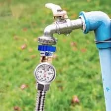

Comprehensive Water Pressure Regulator Services in San Diego
Expert Regulator Installation
Ensure the longevity of your plumbing by installing a high-quality water pressure regulator. Our team ensures that your regulator is perfectly set to protect your pipes and appliances from excessive pressure damage.
Regulator Repair and Replacement
Is your water pressure fluctuating? We offer prompt diagnosis and repair services for malfunctioning regulators. If your device is beyond repair, we provide efficient replacement solutions to restore your home's safety.
Water Pressure Maintenance Services
Regular maintenance of your water pressure regulator is vital to its performance. We provide thorough checks to ensure your device is functioning correctly, extending its life and preventing unforeseen plumbing issues.
Commercial Water Pressure Solutions
We also provide specialized water pressure management for commercial properties in San Diego. Our experts ensure that large-scale plumbing systems are protected from the risks of high water pressure.
San Diego Water Pressure Repair

Identifying and fixing water pressure problems is one of EZ Heat and Air’s specialities in San Diego. To identify the exact reason for fluctuating pressure, our experts employ sophisticated diagnostic equipment. We handle everything from pipe blockages to malfunctioning regulators to guarantee that your water pressure is constantly steady and within a safe range.
We check into why your pressure is high and then resolve it. EZ Heat and Air prioritize effectiveness and dependability in every task. Because of this, San Diego's residents have relied on us for many years. To enjoy expert service and a fully functional plumbing system, get in touch with us right now!

FREE
Estimate
Request a quote and get a free estimate for installation, repair, and replacement services from professionals

FREE
Service Call
From plumbing repairs to full replacements, connect with our experts to inquire about services at zero charges

15%
Discount Available
15% Off to the Police, Military, Fire Seniors and Teachers for Services up to $1000.

FINANCING
Available
Overcome financial barriers and keep your plumbing system up to date with our alternative financing options.

24/7
Service
Same-day Plumbing Service For Any Issue Or Concern Related To Leakage, Clogging, Or Malfunctioning Of Appliances.
Don't Let Plumbing Issues Interrupt Your Comfort & Budget
CALL EXPERTS NOW
 (760) 392 7616
(760) 392 7616
What Our Clients Say About Us

"I recently had a water pressure regulator installed by EZ Heat and Air, and I couldn't be happier with the service. Their team was professional, knowledgeable, and the results were amazing!"
John D. - San Diego
"They diagnosed our high water pressure issue quickly and installed a new regulator within hours. Very honest and efficient work. Highly recommend!"
Robert F. - San Diego
Why Should You Use Water Pressure Regulator Installation Services from EZ Heat and Air?
At EZ Heat and Air, we focus on providing locals with the highest Quality results and outstanding customer service. Here’s why we are the best in the business:
- Experienced Professionals: Our licensed technicians have years of expertise in water pressure management.
- Customized Solutions: We provide personalized assessments to meet your home's unique needs.
- Affordable and Transparent Pricing: We offer competitive rates with no hidden fees.
- Quick and Efficient Service: We prioritize fast response times to minimize disruption to your home.
- Customer Satisfaction Guarantee: We back our work with a commitment to quality and excellence.
Protect your home's plumbing system today. Contact EZ Heat and Air for trustworthy and knowledgeable service!

FAQs
A water pressure regulator is important because it protects your plumbing system from excessive pressure, which can lead to leaks, burst pipes, and damage to appliances like water heaters and dishwashers.
Common signs include banging pipes (water hammer), fluctuating water pressure, leaking faucets, or unusually high water bills. If you suspect your pressure is too high, a professional assessment can confirm the need for a regulator.
In some cases, a malfunctioning regulator can be repaired by replacing certain internal parts. However, if the regulator is old or significantly damaged, replacement is often the more reliable and cost-effective solution.
A typical installation usually takes between one and three hours, depending on the location of your main water line and the complexity of the plumbing.
While it is possible for a highly experienced DIYer, professional installation is strongly recommended. Improper installation can lead to leaks or insufficient pressure, potentially causing more harm to your plumbing system.